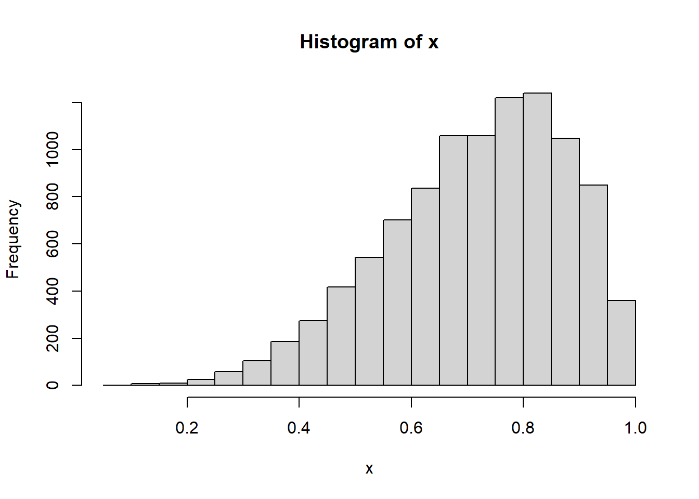
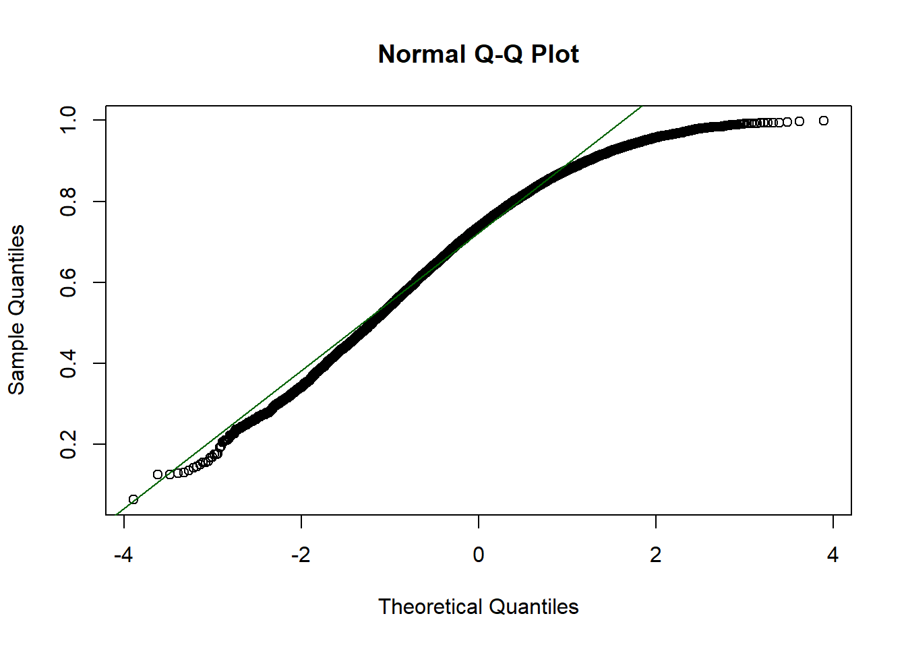
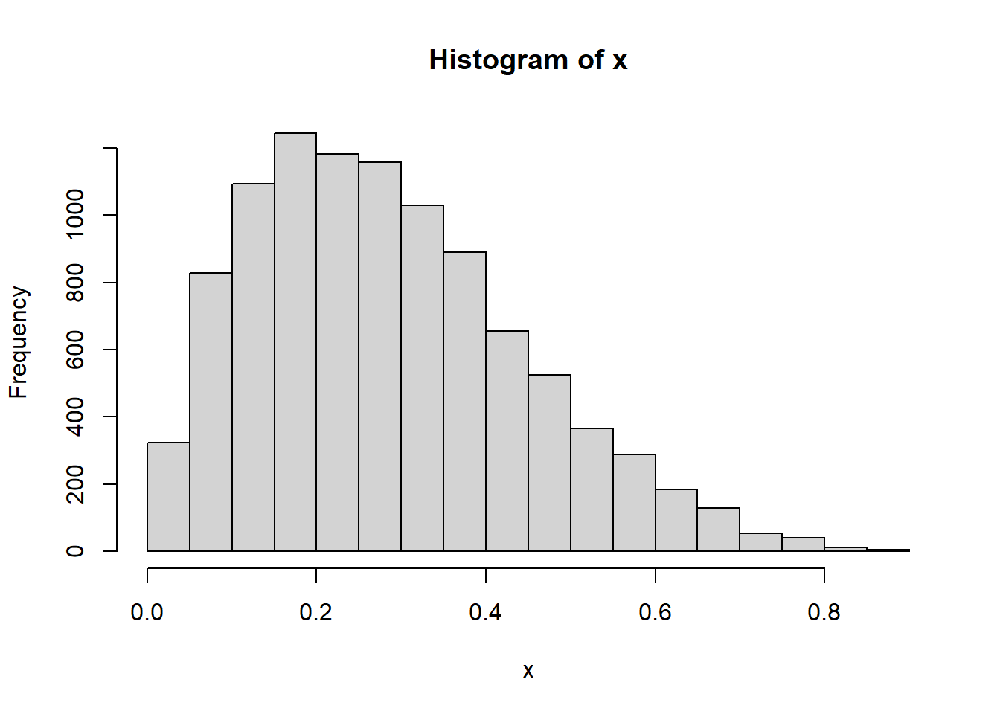
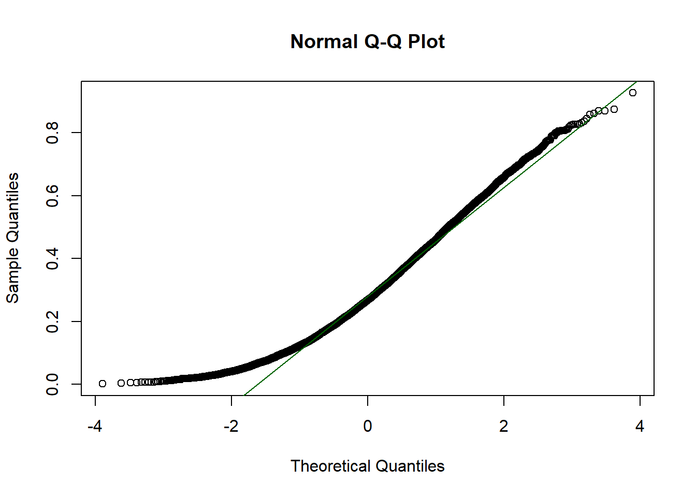
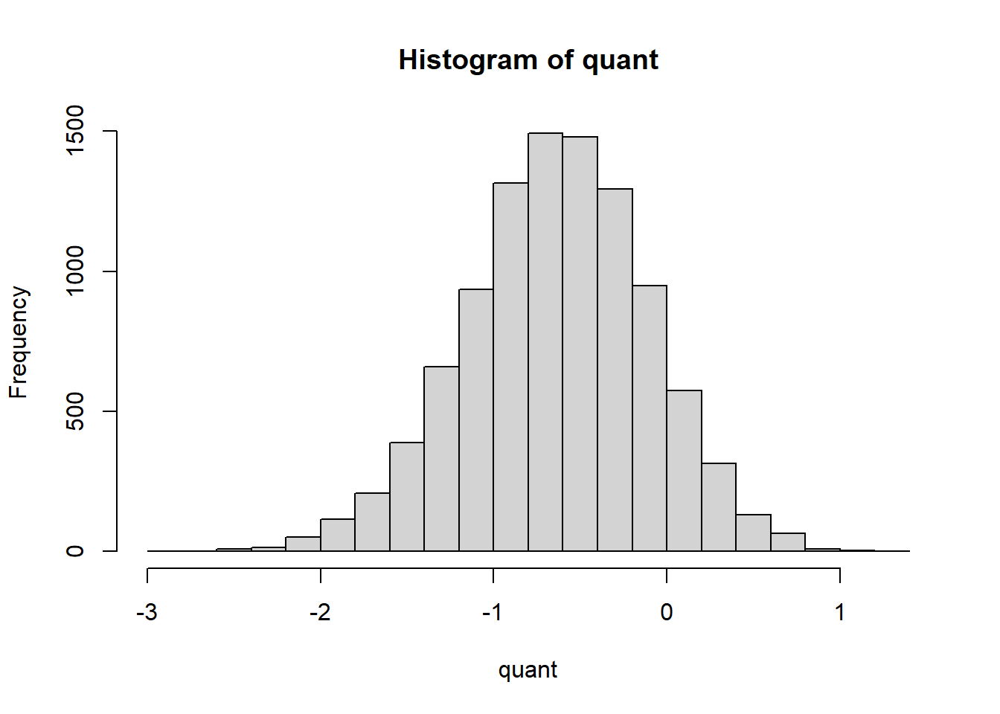
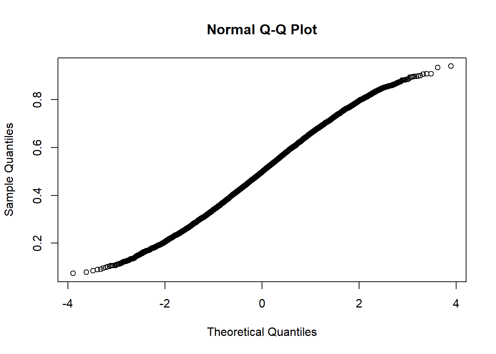
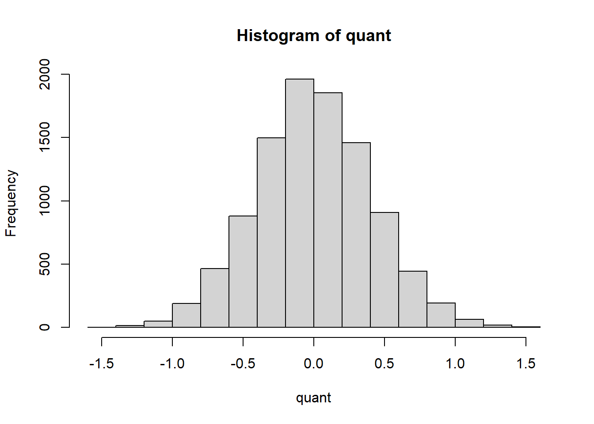

The following object is masked from 'package:base':
backsolve
library(dplyr)
Attaching package: 'dplyr'
The following objects are masked from 'package:stats':
filter, lag
The following objects are masked from 'package:base':
intersect, setdiff, setequal, union
Methods
Design Matrix
The design matrix is defined to be a matrix \(\textbf X\) such that \(\textbf X_{ij}\) (the \(j^{th}\)) column of the i^{th} row of \(\textbf X\)) represents the value of the \(j^th\) variable associated with the i^{th} variable object.
A regression model may be represent via matrix multiplication as \[
y=\textbf X\beta + e
\] where X is the design matrix, \(\beta\) is a vector of the model’s coefficient (one for each variable), e is a vector of random errors with a mean zero, and y is the vector outputs for each object.
Ordinary least squares
Ordinary least squares model or OLS, works by creating a line through the data points. Then it calculates the difference between each prediction and observation (residual). And it tries to minimize the squared value of the residuals. The ordinary least squares is defined by:
\[
y_i=\alpha+\beta x_i+\varepsilon_i .
\]
The least squares estimates in this case are given by simple formulas
\[
\{x_t: t=1,..., T\}
\] denotes a sequence (row) of K-vectors of a known design matrix and \[\{y_t: t=1,..., T\}\] is a random sample on the regression process \(u_t = y_t - x_t\beta\) [1].
Differences
OLS regression minimizes the sum of squares of residuals, but QR minimizes the sum of weighted absolute errors. The idea behind this is if regression process underestimates or overestimates, the proportion of positive and negative residuals will shift. By using these weights, the bias of the model is reduced and the centrality of the model is able to be more accurately estimated.
OLS only estimates the mean, but RQ estimates the conditional quantile. This allows RQ to perform estimates on different intervals of interest rather than just estimating the mean.
Intuition
Right Skew
x <-rbeta(10000,5,2)hist(x)

qqnorm(x)qqline(x, col="darkgreen")

quant <-qnorm(x)#quanttable(sign(quant))
-1 1
1081 8919
hist(quant)
Left Skew
x <-rbeta(10000,2,5)hist(x)

qqnorm(x)table(sign(x))
1
10000
qqline(x, col="darkgreen")

quant <-qnorm(x)#quanttable(sign(quant))
-1 1
8927 1073
hist(quant)

No Skew
x <-rbeta(10000,5,5)qqnorm(x)

quant <-qnorm(x)#quanttable(sign(quant))
-1 1
5060 4940
hist(quant)

As we can see, depending on the distribution of the residuals, the theoretical quantiles will have differing proportions of positive and negative values. In the right skew example, there are 1130 negative data points and 8870 positive data points. For instance, let’s look to see if we were interested in the 90th percentile, there would be 8870 points that would be multiplied by 0.9, and 1130 points that would be multiplied by 0.1. Thus the burden of minimization is going to be cenetered on finding betas that reduce the sum of those 8870 points to the lowest possible number.
Example
Create Data
#make this example reproducibleset.seed(0)#create data frame hours <-runif(100, 1, 10)score <-60+2*hours +rnorm(100, mean=0, sd=.45*hours)df <-data.frame(hours, score)#view first six rowshead(df)
#view summary of model#summary(model)#table(sign(resid(model)))
Graphic
Evaluation metrics
Mean absolute error
The mean absolute error (MAE) is the average magnitude of the errors of the values predicted by the regression and the actual observed values for the response variable. Because it is a simple average, all errors have the same weight, there are no penalties for different magnitude deviations [2]. MAE assumes that the errors are normally distributed, if the error distribution was non-normal, the average may not be a good measure of centrality and can paint a false picture of the goodness-of-fit of the regression curve. MAE also assumes that the errors are unbiased. While the average magnitude of the errors is expected to be non-zero (unless the regression is a perfect fit) the average of the residuals, i.e., the deviation of the predicted value from the actual value, considering underestimation and overestimation. This means on average the regression curve does not over or underestimate.
\[
\text { MAE }=\frac{1}{n}\sum_{i=1}^n\left|y_i-\hat{y}_i\right|=\frac{1}{n}\sum_{i=1}^n\left|e_i\right|
\]
Root mean squared error
It calculates the differences between the predictions and the actual observations (residuals) and then gets their quadratic mean for each. This type of error gives a larger penalty for larger errors [2]. This error also assumes that the errors are unbiased and that they follow a normal distribution. This gives a picture of the size of residuals in comparison to the regression line.